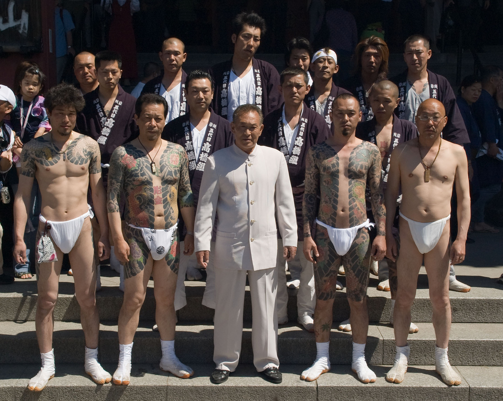

Yakuza
La yakuza (ヤクザ) es el equivalente del crimen organizado; es una mafia japonesa que data del siglo XVII.

Marukin at Sanja Matsuri- Los Yakuza
Datos importantes acerca de los Yakuza
- Los Yakuza dan empleo a más de 100 mil personas. Esto la hace la organización criminal más grande del mundo.
- Cuando un Yakuza falla en cumplir una misión, es castigado con el Yubitsume, un castigo que consiste en la amputación de una parte de los dedos.
- El público que asiste a las luchas de Sumo, son en su gran mayoría miembros de la Yakuza.
- Kazuo Taoka fue el líder de una de las familias Yakuza más poderosas de Japón. Fue apodado “El Oso” por atacar a sus enemigos en los ojos, le dispararon en la nuca, sobrevivió y días después el cadáver de su atacante fue encontrado en el bosque.
- Los Yakuza son dueños de la industria pornográfica en Japón. También tienen redes de prostitución trafico de drogas y comercio ilegal de armas.
- Los Yakuzas aman la extorsión corporativa. Tienen un grupo especializado llamado Sokaiya. El grupo se dedica a conseguir información confidencial y delicada para extorsionar a violadores, estafadores o funcionarios que han cometido algún crimen o irregularidad dentro de la compañía. Los Sokaiya siempre consiguen lo que quieren.
- Existe actividad Yakuza en los Estados Unidos, la mayor parte se encuentra concentrada en Hawaii, aunque también han habido reportes en Nueva York y California.
- Los Yakuza consideran que una muerte violenta es una forma poética y honorable de morir. Se ven a si mismos como una especie de Robin Hood donde roban a los ricos para ayudar a los pobres.
- . Los Yakuza respondieron más rápido que el gobierno japonés, ayudando a los afectados del Tsunami en el 2011. Los Yakuza entregaron comida, agua, abrigo y algunos medicamentos a la población afectada.
- Los tatuajes en todo el cuerpo se han convertido en algo representativo de los Yakuza. Aunque ahora los tiempos han cambiado y las personas que no son miembros también pueden llevar uno, antes sólo eran exclusividad de los Yakuza. En algunos sectores de Japón, no puedes conseguir un trabajo si tienes tatuajes, debido al estigma relacionado con los Yakuza.